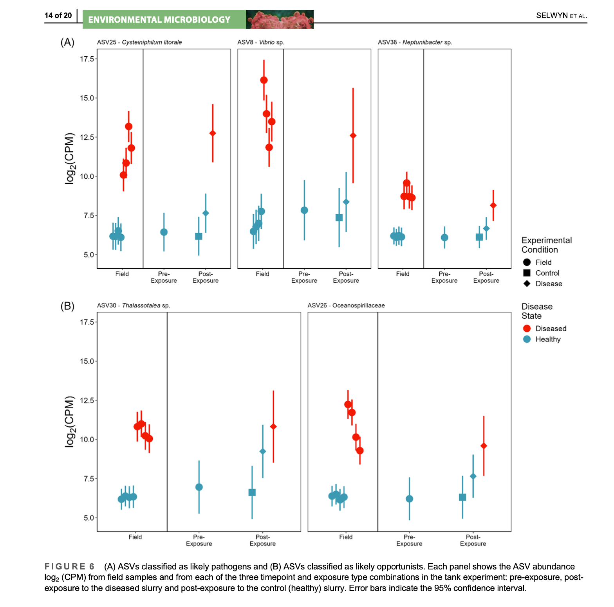

Published research, independent engineering builds, and coursework projects — spanning bioinformatics, reinforcement learning, and applied NLP.

Published in Environmental Microbiology (2024), this project used 16S rDNA bacterial gene sequencing data to train machine learning classifiers — Multilayer Perceptron, SVM, Random Forest, and Lasso Regression among others — to predict coral disease states in endangered Caribbean staghorn coral, achieving over 97% classification accuracy. SHAP-based feature importance analysis identified the specific bacterial taxa most predictive of disease, surfacing candidate pathogens for further study.
Two-pass, Snakemake-orchestrated ANGSD population-genomics pipeline across 290 whole genomes (2 Acropora species, 3 Caribbean regions), portable across workstation, SLURM HPC, and AWS EC2 (Singularity). Retained 2,034,805 SNPs; FST analysis quantified near-complete species isolation (0.43–0.46 inter-species vs. 0.05–0.11 intra-species), SMC++ reconstructed demographic history for both species, and LFMM genotype-environment association identified a candidate thermal-tolerance locus (RNF213) corroborated by an independent introgression signal. Found and fixed a recombination-mapping (pyrho) unit bug blocking downstream analysis. Engineered an AWS spot-instance cost plan (~70% savings vs. on-demand) with automated retry, S3 sync, and auto-stop. Feeds an in-preparation publication.
Designed and built a hierarchical multi-agent orchestration framework (Google ADK + Gemini, FastAPI/SSE UI) across six iterations. Its human-in-the-loop pipeline lets agents draft a Python tool for a task, sandbox-test it with an auto-repair retry loop, and hold it for human approval before caching it for reuse — turning one-off automations into a growing, validated tool library. Includes a telemetry-driven "efficiency maximizer" that routes subtasks to cheaper or more capable models based on difficulty, and a 34-test suite running in ~1 second. Piloted internally at Moviri as a deployed Cloud Run tool under the firm's AI Labs program.
Implemented and benchmarked multiple competing poker-AI approaches for 6-player play: Counterfactual Regret Minimization (CFR/MCCFR), a custom Q-learning agent, and a REBEL-style self-play agent with neural policy/value networks and a replay buffer. Ran head-to-head tournaments (REBEL vs. Q-learning, vs. random, and self-play) to evaluate exploitability, and wrote up the results and methodology.
Built a Minimax engine with move ordering, alpha-beta pruning, and global search caching for a custom 2v2 team variant of chess on a 14×14 board, layered onto a forked open-source GUI. Beat random-move AI 100% of the time and won roughly 50% of games against experienced human players.
NLP pipeline over the Boston 311 API to extract, preprocess, and classify traffic violation reports — automating detection of issues like bike lane obstructions for urban planning use.
Java application supporting a range of advanced image filters, transformations, and format conversions, built around a clean, extensible command architecture.
Automated pipeline for genome-wide association analysis of COVID-19 data at Mass General Hospital, improving processing efficiency for large-scale genetic analysis and demographic positivity-rate visualization.